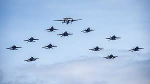

Un avión de caza (también llamado avión de combate), o simplemente caza, es una aeronave militar diseñada fundamentalmente para la guerra aérea con otras aeronaves, en oposición a los bombarderos, que están diseñados principalmente para atacar objetivos terrestres mediante el lanzamiento de bombas. Los cazas son pequeños, veloces y de gran maniobrabilidad. Muchos cazas poseen capacidades secundarias de ataque a tierra, y algunos son de doble propósito para actuar como cazabombarderos, término también usado para nombrar a los aviones de ataque a tierra con capacidades de caza.
en el mundo de la aviacion militar hay muchos tipos de aviones de combate, entre los mas destacados estan: avion de ataque a tierra, caza polivalente, cazas navales, entre muchos mas, tambien hay aviones que son de las fuerzas aerias poero no son de combate por ejemplo los aviones de transporte y los espias.
